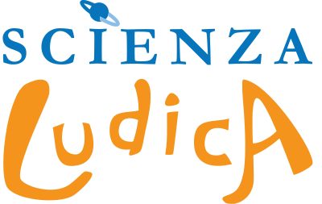

Machine Learning Engineer
Computer vision for industrial production — AI tailored to real factory workflows, from defect detection to R&D automation.
Simply works.
Discoveries
Portfolio
Machine Learning Engineer @tuboolar
I build computer-vision AI for industrial production, and I teach kids that robots are something you make, not just something you watch. MSc in Artificial Intelligence & Data Engineering from the University of Pisa (110/110 cum laude), Vice President of the STEAM-education association Scienza Ludica.
Experience
Computer vision for industrial production — AI tailored to real factory workflows, from defect detection to R&D automation.
Simply works.

Robotics, coding, AI and STEAM workshops for school children. Vice President of the association since June 2025.
Science, but playful.
Workshops for primary-school teachers on using AI as a supportive tool to enhance teaching and integrate technology effectively.
Developed the “Lévy Walks — Robotic Simulation” project with biology and physics researchers at the National Research Council. Presented at Didacta Italia 2017.
Led team “2IBombi” to win the national robotics and science competition, then represented Italy at the World Championship. Presented at Rome Maker Faire 2015.
Education
Thesis: “A machine unlearning approach based on multi-objective loss function to forget samples in object detection”
Thesis: “Implementation and comparison of explainable machine learning approaches for the analysis of urban mobility”
Projects
Full Retrieval-Augmented Generation pipeline that lets you hold a conversation with Llama 3.2 3B about your own PDF documents.
Generates quizzes from study materials and manuals using generative AI. Presented at Internet Festival 2023 in Pisa.
Mobile app helping cyclists and pedestrians find quiet routes in Pisa through a crowdsourced noise map.
Airbnb-like accommodation platform designed for Erasmus students, with built-in social features.
Highlights
Presented “Generative AI in Business Strategy — Testing into the Wild”, a methodology for introducing GenAI into corporate decision-making.
Opening talk on the limits and potential of generative AI for conscious use.
Presented QuizGenAIrator, a generative-AI quiz builder for study materials.
Public-transport tracking app awarded by JA Italia and showcased at Didacta Italia 2018 in Florence.